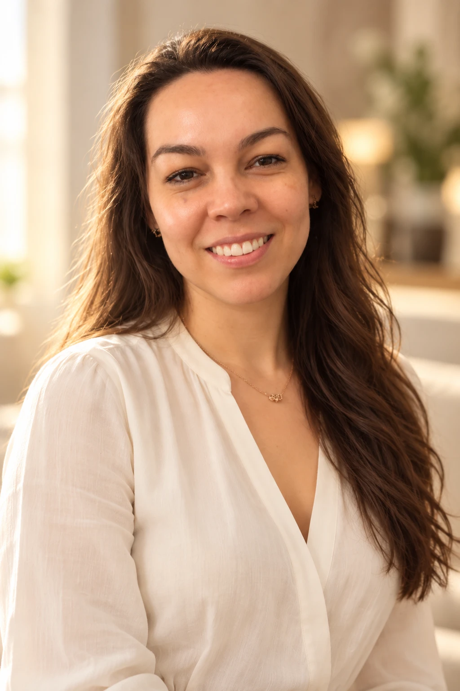
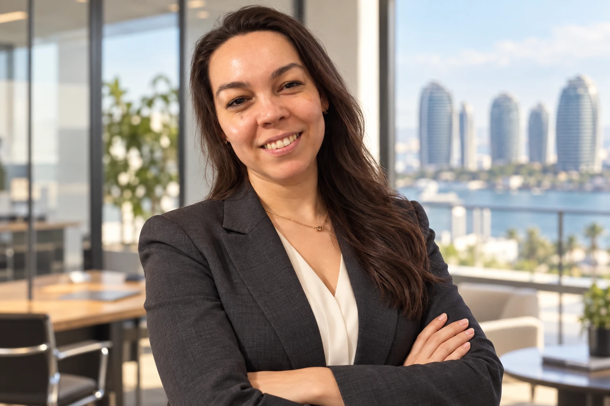
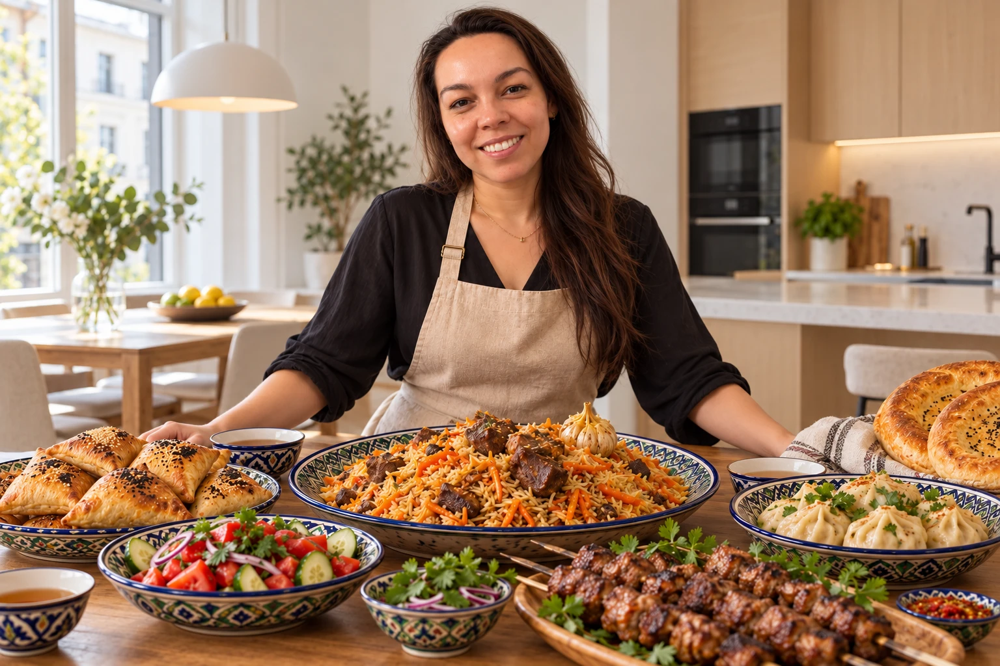
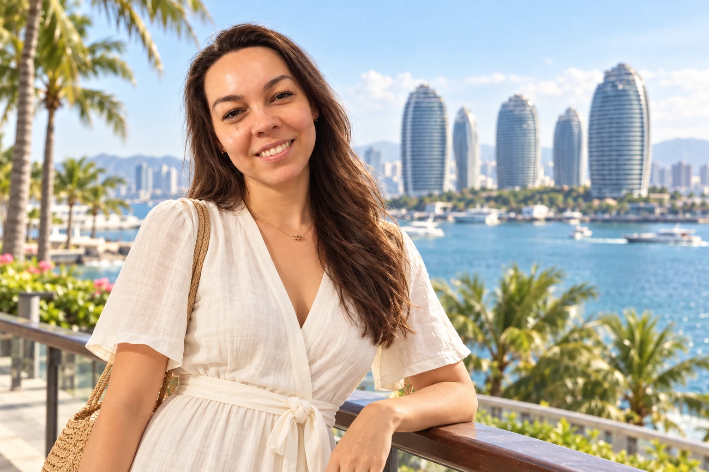

Личная история / София Рева
Руковожу
продажами.
Готовлю с душой.
Открываю мир.
Я София — жена и мама двух дочерей. В моей жизни есть место большим проектам, ароматам узбекской кухни и путешествиям. А рядом — любимый муж и наши девочки.
Познакомимся поближе

01 / Работа
Большие проекты.
Человеческий подход.
Я руковожу продажами в компании, которая создаёт системы обогрева кровель для крупных предприятий, в том числе нефтегазового сектора.
В моей работе встречаются технологии и люди: важно понять задачу заказчика, говорить на одном языке и найти решение, на которое можно положиться.

02 / Кухня
Готовить — значит
делиться теплом.
Узбекская кухня — моё любимое увлечение. В ней я люблю щедрость вкусов, аромат специй и удовольствие от неспешного приготовления.
Рассыпчатый плов, румяная самса, сочные манты и свежие лепёшки — блюда, ради которых хочется накрыть большой стол. Особенно когда за ним собираются муж и две наши дочери: готовить для близких — особенное удовольствие.
«Готовить для любимых.
Открывать мир вместе».
03 / Путешествия
Китай.
Моё вдохновение.
Люблю отдыхать в Китае. Море, пальмы и необычная архитектура Саньи — возможность сменить ритм и увидеть новое. А самые дорогие моменты отдыха — время вместе с мужем и двумя дочерьми, когда можно отложить дела и просто быть рядом.
